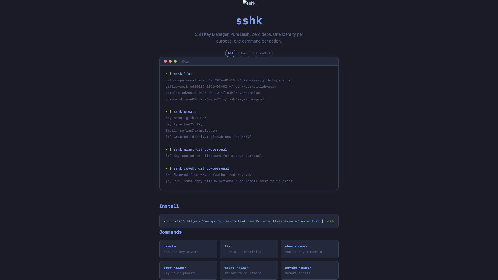

Open Source CLI
sshk
SSH Key Manager — create, organize, grant, and revoke SSH keys. Pure Bash + OpenSSH.
Bash Zero Dependencies
8 Commands
sshk terminal

Manage SSH keys right from the terminal
Features
One Identity Per Purpose
Each SSH key lives in its own namespace under ~/.ssh/keys/ — no more flat id_rsa mess.
Interactive Creation Wizard
Create ed25519 or RSA keys with guided prompts for name, host, and comment.
Grant & Revoke
Push your public key to remote servers in a single command. Revoke access just as easily.
Auto-Assembled SSH Config
Config snippets under ~/.ssh/config.d/ are assembled automatically so ssh
Zero Dependencies
Pure Bash. Nothing to install beyond OpenSSH, which you already have.
Authorized Keys Management
Track who can connect to your machine with ~/.ssh/authorized_keys.d/ — one file per source.
Quick Start
Install in one command. Start managing SSH keys.
1. Install
curl -fsSL https://raw.githubusercontent.com/Sofian-bll/sshk/main/install.sh | bash
2. Create your first key
sshk create
3. List your identities
sshk list
4. Grant access to a server
sshk grant mykeyHow It Works
Three directories. One predictable structure.
tree sshk
~/.ssh/
├── keys/ # Your identities
│ ├── github/
│ │ └── id_ed25519
│ └── vela/
│ └── id_ed25519
├── config.d/ # SSH config snippets
│ ├── github.conf
│ └── vela.conf
└── authorized_keys.d/ # Who can connect to you
└── macbook